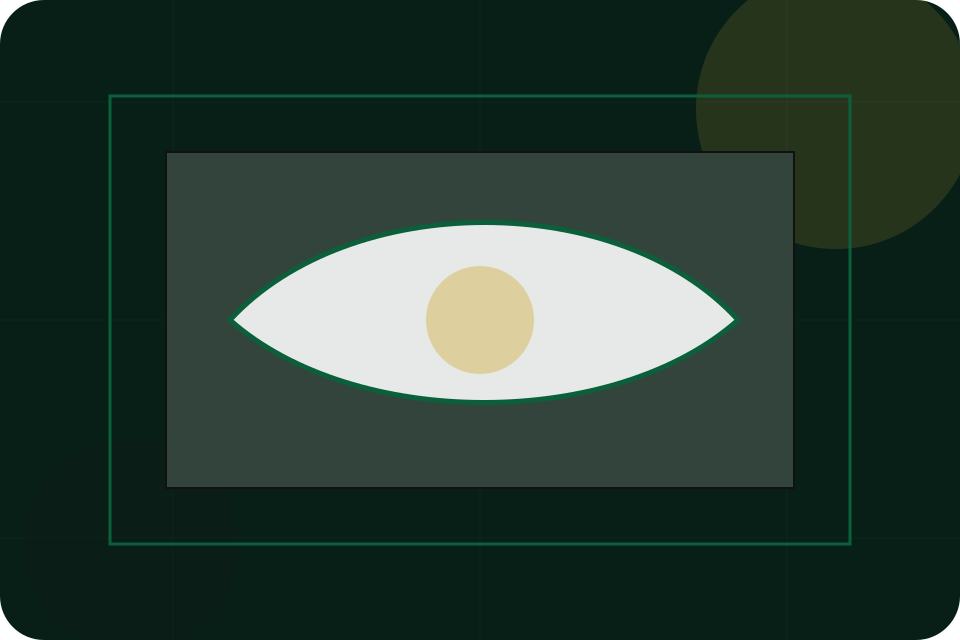
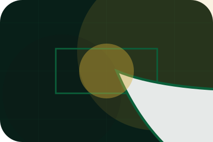
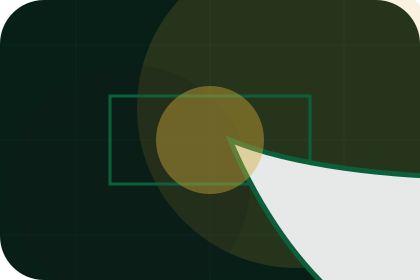
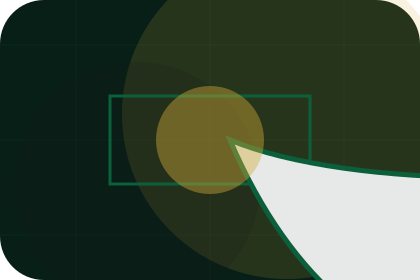
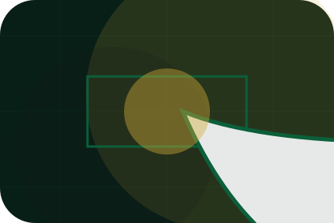
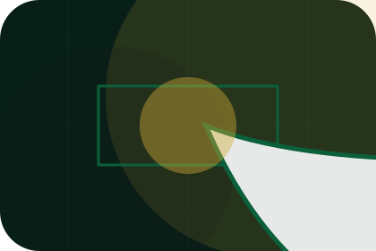
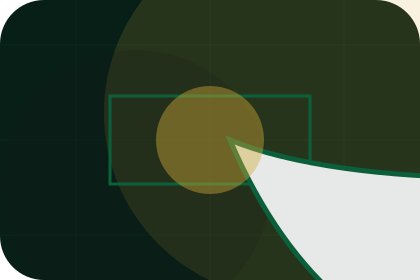
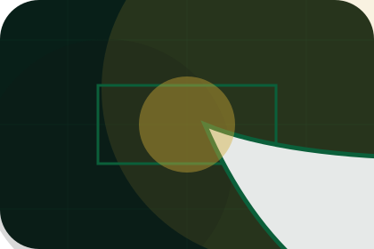
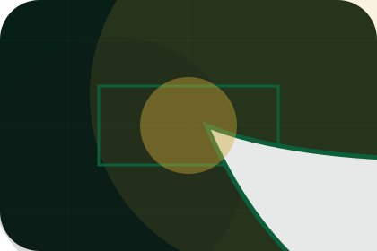
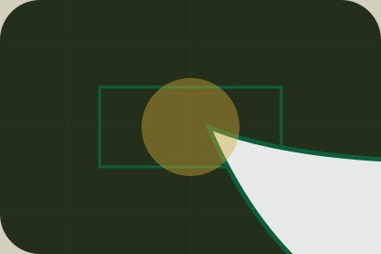

Invitation
Personalisation is framed with restraint, enough detail to feel considered, and a private route forward.
Experience / 01
Experience opens as a clear luxury decision hub: what Maison offers, who it helps, why it matters, and which route to take first.
The first screen combines positioning, proof, primary action, and fast internal navigation, so people can act immediately or compare the rest of the experience route with context.
Deep-green private hero
Select the closest route and Maison keeps the next step, proof, and follow-up expectation aligned with status and discretion.

Experience / 02
Personalisation adds luxury context to the experience route, using the heritage luxury maison structure to support status and discretion before visitors choose a next step.
Maison uses gold hairline cards and focused copy to make the decision easier to scan, aligning the section with status and discretion rather than filling space.
Explore Experience

Personalisation is framed with restraint, enough detail to feel considered, and a private route forward.
Experience / 03
Detail adds luxury context to the experience route, using the heritage luxury maison structure to support status and discretion before visitors choose a next step.
Maison uses gold hairline cards and focused copy to make the decision easier to scan, aligning the section with status and discretion rather than filling space.
Explore ExperienceDetail is framed with restraint, enough detail to feel considered, and a private route forward.

The proof appears through standards, context, and carefully chosen visual evidence rather than volume.

The next action explains what to send, when to expect a response, and how access is handled.
Experience / 04
Privacy keeps the support layer readable, with policy, access, and recovery information shaped for real visitors.
Utility content is kept plain and scannable so legal, accessibility, sitemap, and recovery routes feel like part of the experience, not an afterthought.
Explore Experience
Privacy is framed with restraint, enough detail to feel considered, and a private route forward.

The proof appears through standards, context, and carefully chosen visual evidence rather than volume.

The next action explains what to send, when to expect a response, and how access is handled.
Experience / 05
Touchpoints adds luxury context to the experience route, using the heritage luxury maison structure to support status and discretion before visitors choose a next step.
Maison uses gold hairline cards and focused copy to make the decision easier to scan, aligning the section with status and discretion rather than filling space.
Explore ExperienceTouchpoints is framed with restraint, enough detail to feel considered, and a private route forward.
The proof appears through standards, context, and carefully chosen visual evidence rather than volume.
The next action explains what to send, when to expect a response, and how access is handled.
Experience / 06
Rituals adds luxury context to the experience route, using the heritage luxury maison structure to support status and discretion before visitors choose a next step.
Maison uses gold hairline cards and focused copy to make the decision easier to scan, aligning the section with status and discretion rather than filling space.
Explore ExperienceRituals is framed with restraint, enough detail to feel considered, and a private route forward.
The proof appears through standards, context, and carefully chosen visual evidence rather than volume.
The next action explains what to send, when to expect a response, and how access is handled.
Experience / 07
Care adds luxury context to the experience route, using the heritage luxury maison structure to support status and discretion before visitors choose a next step.
Maison uses gold hairline cards and focused copy to make the decision easier to scan, aligning the section with status and discretion rather than filling space.
Explore Experience
Care is framed with restraint, enough detail to feel considered, and a private route forward.

The proof appears through standards, context, and carefully chosen visual evidence rather than volume.
The next action explains what to send, when to expect a response, and how access is handled.
Experience / 08
Aftercare adds luxury context to the experience route, using the heritage luxury maison structure to support status and discretion before visitors choose a next step.
Maison uses gold hairline cards and focused copy to make the decision easier to scan, aligning the section with status and discretion rather than filling space.
Explore ExperienceAftercare is framed with restraint, enough detail to feel considered, and a private route forward.
The proof appears through standards, context, and carefully chosen visual evidence rather than volume.

The next action explains what to send, when to expect a response, and how access is handled.
Experience / 09
Feeling makes commercial comparison easier by showing fit, scope, and terms before luxury visitors ask for the next step.
The layout keeps price-sensitive decisions honest: it separates starting scope, fuller delivery, and ongoing support so the visitor can ask a sharper question.
Explore ExperienceFeeling is framed with restraint, enough detail to feel considered, and a private route forward.
The proof appears through standards, context, and carefully chosen visual evidence rather than volume.

The next action explains what to send, when to expect a response, and how access is handled.
Experience / 10
Maison closes the experience route with a clear action, a quick reminder of the value, and a low-friction way to request private access.
Visitors who are ready can use the primary action. Visitors who are still comparing can scan the section links, proof, and support routes before they request private access.
Request Private AccessThe final block keeps the choice simple: act now, compare one more proof route, or send enough detail for a focused response.
Request Private Accessstatus and discretion
A luxury service site with green-gold maison mood, heritage cards, private access routes, and discreet proof. Experience ends with a direct path to request private access, plus enough context for visitors who still need to compare.

Request Private AccessInformation is provided for planning and should be reviewed for the final client, location, and operating rules.